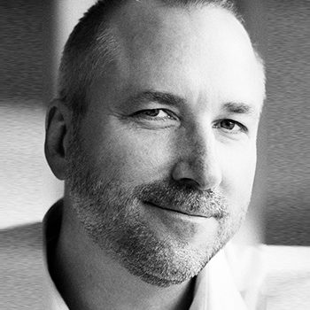

IT der bare virker. En partner, der kender jer.
DataMatrix designer, driver og sikrer IT for små og mellemstore virksomheder — med mere end 30 års erfaring, personlig service og AI, der arbejder med i driften.
Det, vi tager ansvar for.
Fra den daglige drift til det store projekt. I kan få det hele, eller vi kan supplere den IT-ansvarlige, I allerede har.
Drift og overvågning
Vi holder øje med servere, klienter og backup — også den backup, der aldrig kørte.
Servere · klienter · backup→IT-sikkerhed
Firewall, mail- og endpointbeskyttelse, adgangsstyring og opdateringer — som en rød tråd, ikke et tilkøb.
Firewall · endpoint · adgang→Backup og beredskab
Backup der er testet, og en plan for den dag, det går galt. Disaster recovery er et af vores specialer.
Backup · DR · test→Microsoft 365 og cloud
Mail, Teams, SharePoint og Azure sat op rigtigt — og den rette balance mellem sky og lokalt.
M365 · Azure · hybrid→Infrastruktur
Servere, netværk og virtualisering, der kører stabilt år efter år. Også hardware og licenser.
Server · netværk · licenser→AI i drift
AI sorterer, prioriterer og skriver runbooks i vores egen drift — med et menneske, der godkender.
Agenter · runbooks · godkendelse→Vi opdager også den backup, der aldrig kørte.
De fleste overvågningssystemer siger til, når en backup fejler. Men hvad med den, der slet ikke startede? Den giver ingen fejlbesked — og opdages typisk først den dag, man skal bruge den.
Vores overvågning ved, hvad der burde være sket, og slår alarm, når noget mangler.
Lille nok til at kende jer. Stærk nok til at stå bag jer.

“Når I ringer, taler I med én, der kender jeres systemer — ikke et sagsnummer.”
- En ny tekniker hver gang
- Sagskø og standardsvar
- Pakkeløsninger
- Langt til en beslutning
- Én fast senior kontakt
- Kort vej fra opkald til løsning
- Skåret til jeres forretning
- I taler direkte med ejeren